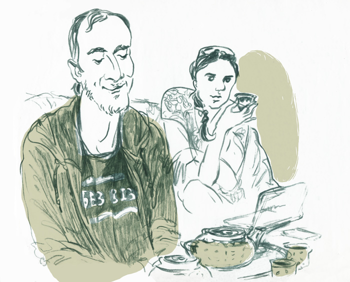

Любой задумывался хоть раз о переезде в другую страну. Это как обязательный пункт в to-do листе беларуса, да и любого современного молодого человека. Мы поговорили с людьми, которые отнеслись к этому намерению с большей или меньшей степенью серьёзности и оказались в Праге.
Саша, Praha1
25 лет, музыкант. В Чехии 3 года.
Мы встретились на Вацлавской площади, в привычном месте встреч всех прибывших. Не удивительно, если бы нам попался ещё десяток знакомых. Беларусов здесь много, и нетрудно отыскать общих друзей, которые живут в Праге давно или недавно, а может, приехали в гости присмотреться. Узнав друг друга в толпе туристов, мы уселись в шумном кафе. Мы не постеснялись выпить вина во время первого интервью, а Саша не постеснялся нас угостить. И рассказал, почему мы познакомились не в Минске, а в Праге.
Почему ты решил уехать?
Во-первых, из-за друзей. Мы в Минске основали группу The Unlimited Trio. Друзья уехали в Прагу, но нам хотелось продолжать вместе играть. Во-вторых — хотелось чего-то нового. Я понял, что надо более толково время проводить. И что лучше попробовать, чем сожалеть об упущенной возможности. А в-третьих — я должен констатировать, что в сравнении с Чехией у нас меньше работы для музыканта. Ты вынужден больше энергии затрачивать на её поиск, играть музыку, которая тебе претит. А здесь есть возможности для профессионального роста. Так что я могу часто и успешно выступать, но бывают когнитивные диссонансы, когда наблюдаю или общаюсь с чехами. В общем, решение не было спонтанным, но и не очень долго планировалось. И, если честно, эти причины — это надуманная вещь, потому что заранее не узнаешь, будет ли тебе комфортно в новой стране. Чтобы понять, как там люди мыслят и чувствуют, нужны не недели или месяцы, а годы. Я только сейчас стал понимать местных, хотя с первого года владел языком, преподавал в музыкальной школе и давал частные уроки. Но ментальный барьер существует, и чем дальше, тем он больше.
Не страшно было переезжать?
Это не первый мой переезд, я же не из Минска. Но если бы не было друзей в Чехии, я бы не поехал. За дружбой можно ехать, мне важны точки опоры. К тому же они помогли мне устроиться, решить вопросы с документами, показали Прагу. Я уже за полгода приезжал к ним, чтобы осмотреться.
Жалеешь о чём-нибудь, что осталось в Беларуси?
Жалко было бросать других друзей, проекты, дом. Но я и не бросаю: езжу в Беларусь, с группой BosaeSonca играем концерты, записываем альбомы. Каждый свою партию делает, а потом сводим в Минске. Сегодня я работал над партией баяна для кавера на Песняров. Но, безусловно, если не находиться в Беларуси постоянно, теряется часть ощущений. Я не могу сказать, какая в Минске атмосфера сейчас. Не знаю, сколько хлеб стоит, молоко — всех этих мелочей, из которых складывается жизнь. С родителями недостаточно времени провожу. Всё это меня сильно гложет, думаю об этом каждый день. Если материал будут читать люди, которые хотят уехать заграницу, то хочу им сказать — подумайте трижды. Запредельно лучшей жизни вы не найдёте нигде. Существует равновесие: лучше материально — тяжелее в духовном плане. Сначала мне было клёво, просто и легко, но со временем сложности, которые были в Беларуси, забываются, а «плюсы» Чехии становятся обыденностью. Остаётся только какой-то сгусток энергии, по которому судишь, комфортно ли тебе.
А ты решил, остаёшься ли в Чехии?
Нет, не решил. Ближайшее время я точно буду здесь, потому что есть проекты, концерты запланированы с чешскими музыкантами. И я продолжаю учиться: закончил консерваторию как баянист, теперь учусь на композитора. Но я задумываюсь о возвращении. Западное образование не везде в Беларуси признаётся, а я уехал с третьего курса Белорусской академии музыки. Глупо возвращаться и начинать сначала. Вопрос открыт, в общем.
С какими трудностями ты столкнулся, когда приехал? Бюрократия, языковой барьер?
Не особенно. Языковой барьер — это не проблема. Главное, не бояться говорить неправильно. Вас всё равно поймут, скорее всего. Чехи просто к этому относятся.
Что тебя удивило, шокировало?
Не то чтобы шокировало, но люди иногда непонятно себя ведут. В Беларуси людей сразу чувствуешь: по тому, как он говорит, по жестам. Чехов так не почувствуешь, потому что ты не в контексте. Они доброжелательные, много хорошего всегда пожелают, но глубинных вещей я не чувствую: можно ли положиться на человека, например.
Беларусы не любят решать проблемы. Они думают, что решение придёт откуда-то само
У тебя есть друзья среди местных?
Знакомых — туча. Кто-то более близкий, кто-то менее. Чехи толерантны к приезжим, человеком второго сорта я себя никогда не ощущал. Люди здесь стараются хорошо друг к другу относиться, не портить лишний раз нервы. Они не загоняются, не выдумывают проблемы. Но иногда хочется поделиться личным, о чём долго размышлял, а им как горох об стену. Поэтому не могу сказать, что есть близкие друзья среди местных.
А были нелепые случаи, связанные с незнанием менталитета?
Как-то раз общался с девушкой, очень долго и хорошо разговаривали. Но после вопроса, сколько она зарабатывает, дружелюбность резко пропала, и она вообще перестала со мной общаться.
Ты изменился, живя здесь?
Естественно, среда влияет. Чехия меня расшевелила. Раньше я был более зажатым, застенчивым, волновался о малозначительных вещах. Ценности меняются. Или вот в профессии... Моя сильная сторона в музыке — энергия, а не техничность. Я выкладываюсь на каждом концерте, меня должно «переть», иначе никак. В Беларуси у меня было пару концертов в месяц, и каждый был событием: неделю готовишься, переживаешь, потом неделю ходишь под впечатлением. А здесь бывает, что 5 концертов в неделю. И надо адаптироваться к такому ритму, энергия ведь иссякает.
У тебя есть понятие дома? Оно связано с географией?
Мой дом, конечно, там, где я вырос. Это конкретный дом в Барановичском районе, с садом и огородом. Здесь всё немного чужое, даже природа. Я не могу полностью ассимилироваться. Всё-таки я беларус по корням и по самоопределению. Зачем себе врать — я не чех.
А что ты можешь сказать о Беларуси и беларусах, глядя извне?
Беларусы не любят решать проблемы. Они думают, что решение придёт откуда-то само. Видят проблему вовне, а не в себе. Помню, нам вручили премию Experty.by за лучший беларускоязычный альбом. Я почитал комментарии к этой новости на tut.by и был поражён, что можно так предвзято негативно относиться к своему. В Чехии любят своё. С другой стороны, отсюда видно, что Беларусь — непаханое поле возможностей. За границей смотришь по сторонам и приходят идеи, что можно сделать в Беларуси.
Что ты думаешь о визах и границах?
Я думаю, это чушь собачья. Понимаю, что никто их сейчас не отменит, но верю, что когда-нибудь люди будут верить друг другу. И границы станут не нужны.
Расскажи о планах.
Продолжать работать: выпустить третий альбом BosaeSonca, второй альбом The Unlimited Trio, больше выступать сольно, больше сочинять. Хотелось бы больше выступать в Беларуси. Я раньше думал, что это невозможно, но думаю, что не прав, и хочу в этом убедиться.
Лёша, Praha 10
33 года, художник. В Чехии 7 лет.
Чтобы добраться до Лёши, пришлось отправиться на окраину Праги, где город начинает терять собственные черты. Нам долго и подробно объясняли, сколько раз повернуть налево и направо. Мы попали в большущий частный сектор, Лёшин дом значился под номером что-то вроде 1984. Проникнуть в него оказалось невозможно, потому что дверной звонок не работал, на телефоне закончился кредит, автосигнализация не срабатывала, как машину ни толкай, а прохожий чех, верно, подумал, что две скромные девушки забрались в такой стрёмный район и подошли к нему, чтобы украсть телефон. Благодаря чудесному стечению обстоятельств, мы попали к Лёше в гости, где оказалось уютно и просторно, и обо всём его расспросили.
Почему ты решил уехать? Как это всё происходило?
Решение само собой созрело. В детстве бывал за границей, потом ездил по студенческой программе Work&Travel в Америку. В общем, захотелось получить образование «там». У нас ведь в Академии искусств до сих пор нет отделения современных медиа — интермедиа хотя бы или мультимедиа — упор на классику. И процент выпускников, которые становятся художниками, то есть свободомыслящими творцами, а не ремесленниками, очень маленький. А в Чехии акцент делается не на ремесло, а на творческие поиски, уникальные для каждого художника. Окончив художественный лицей, я решил не поступать в Академию, как весь наш поток, а пошёл в Минский институт управления учиться на переводчика, чтобы выучить языки и уехать куда-нибудь. После универа я работал ассистентом фотографа в Минске. Всё это время я, конечно, занимался каким-то творчеством: музыкой, фотографией, чем угодно. На самом деле, я думал, что никогда в жизни не буду художником, а потом меня будто «догнало»: начал бомбить один холст за другим, выставки пошли и т.д. И решил продолжить обучение. Чехию выбрал, потому что здесь бесплатное образование и не так далеко.
Я ещё ничего не сделал, но уже чувствую себя виноватым
Тебе было страшно покидать привычное уютное окружение?
Да, мне было уже 26 лет. Там ещё такая система была: я по интернету отправил работы, и они просто приняли меня без экзаменов. И я уехал в неизвестность: ни друзей, ни родственников в Чехии у меня не было.
А как родные отреагировали на переезд?
Да нормально. Они понимают, что если есть возможность, надо сваливать. Многие мои друзья, нормальные, думающие люди пытаются уехать из Беларуси.
Какое было первое впечатление, что тебя удивило?
Ой, у них сморкаются очень громко везде: в столовой сидишь, а какая-нибудь милая девушка достаёт платок — и начинает на всю столовую. И они в лифте здороваются. Приезжаешь в Беларусь и начинаешь в магазине, в маршрутках со всеми здороваться, а на тебя так смотрят, как на дурака. В Беларуси ощущаешь постоянное напряжение. Я ещё ничего не сделал, но уже чувствую себя виноватым. Там есть классные люди, но атмосферка в Чехии более свободная.
А что составляет эту атмосферу, на твой взгляд? Как она формируется?
Отношение к человеку другое у государства, у полиции. Более уважительное. В Беларуси в любое время к тебе может подойти мент, и будет чувствовать себя каким-то богом: может тебя обыскать, отвести в опорку без объяснений.
С какими сложностями ты столкнулся?
Я здесь семь лет, но и сейчас чувствую себя как на чемоданах, потому что каждый год нужно продлевать визу. Я уволился с работы, где у меня была рабочая виза, и мне дали 2 месяца на поиски нового договора. Иначе всё, пока! Мне приходится бегать, срочно устраиваться на дебильные работы из-за визы, а это не так легко. Кроме того, студенческая виза считается как год за полгода. Это значит, что 6 лет учёбы считаются за 3 всего лишь. Бред. Чтобы получить ПМЖ, надо 5 лет прожить, то есть мне ещё полтора года где-то тусоваться.
Получается, в планах у тебя возвращение не значится?
Нежелательно было бы.
А чем ты сейчас занимаешься? Где работал в Чехии?
После окончания Западно-чешского университета в Плзни я отработал полгода ассистентом преподавателя, чуть-чуть поучил первый курс иллюстрации. Был на вступительных экзаменах, тайком помогал русскоговорящим. Теперь в Праге полтора года. Нашёл интереснейшую работу песочным художником, делал шоу на песке, но ушёл месяц назад. Работаю сейчас сценаристом игры в альтернативной реальности. И буквально несколько дней назад устроился редактором в журнал, потому что нужен договор. Плюс занимаюсь росписями, халтурками всякими, в выставках участвую, но это мало денег приносит. А основная линия в том, что я художник, просто картин не так много продаётся пока, чтобы выживать. Только что закончилась выставка, через неделю будет другая, потом ещё одна. Короче, я пытаюсь продвигать искусство, гнуть свою линию. Не хочу работать на кого-то целую жизнь.
Произошёл ли глобальный пересмотр ценностей?
Да. В Чехии концептуальным искусством никого не удивишь, вот в чём дело… У нас наоборот этим интересно заниматься, народ удивлять. Чехов удивишь скорее нашим академизмом, потому что их учат не ремеслу, а свободе, раскрепощению. Беларуские художники здесь поражают всех умением рисовать, представьте себе.
У всех есть национальные стереотипы. Какие ты можешь сформулировать национальные стереотипы относительно чехов?
Чехи немножко лентяи. Они весёлые, на расслабоне, позитивные. Ну и немного распиздяи, да. Но в хорошем смысле слова. С ними приятно себя чувствуешь.
Когда столько людей, с которыми можно поговорить по-русски, не хочется идти к чехам
Какой у тебя круг общения? Появились ли друзья среди местных?
Больше всего беларусов, чехов мало из-за языкового барьера. Когда появились «наши» в моём университете — человек 15 из Гродно, творческие приятные люди, — быстро сложилась тусовка. Здесь много русских, это свой мир внутри мира. Когда столько людей, с которыми можно пообщаться на нормальном языке, не напрягаясь, не хочется идти к чехам. Это, конечно, плохо, но так получается.
Как к тебе местные относятся?
С теми, кого я встречал, не было ничего такого. Если нормально себя ведёшь, они тоже к тебе хорошо относятся. А если русские туристы или украинцы приезжают на несколько дней и наглеют, тогда и отношение соответствующее. Я их и сам не люблю.
Есть ли у тебя понятие «дом»? Связано ли оно с географией?
Нет. У меня минимальное количество вещей, потому что в любой момент могу уехать, переехать. Люди — единственное, что притягивает, но не территория. Конечно, мне было бы приятно сейчас вернуться в свою хатку, но это не значит, что это мой дом. Я скорее космополит, но иногда чувствую экстаз: ощущаю себя беларусом, это приятно. Но быстро возвращаюсь к пониманию, что национализм — это бред. Многие умные люди говорят, что это худшее, что может быть. Я считаю, что все мы — дети земли. Адам и Ева родители всех — какая может быть национальность? Только по территориальной принадлежности.
Что для тебя Беларусь сейчас? Кем ты себя ощущаешь?
Точно не родина, скорее место, где я родился. Не тянет меня к родным «мясцінам» вообще. Я чувствую себя человеком на земле, вот и всё.
Настя, Praha 7
29 лет, ювелир. В Чехии 10 лет.
Мастерская Насти находится в районе Голешовице, недалеко от центра, в бывшем Министерстве транспорта. Это здание одним из первых в Праге построили по офисному образцу. Выглядит колоритно, будто из фильма Жака Тати “Время развлечений”: множество коридоров и пронумерованных дверей, стены в цвете бирюзы, большой горчичный диван в холле, а в широких окнах виднеется давно пустующее офисное пространство с бесконечными перегородками — ощущение казённого Баухауза. Забавно, что здесь сохранилась система пропусков, хотя в здании располагаются преимущественно мастерские, дизайнерские и архитектурные студии. На проходной сидит строгий дяденька с усами и добросовестно выполняет свою работу. Настя ведёт нас в небольшую комнату с окном во всю стену, угощает чаем и рассказывает о себе в Чехии.
Для начала расскажи, почему ты решила уехать и как всё состоялось?
Я закончила «Глебовку», хотелось продолжать учёбу. Я знала, что не смогу поступить на бюджет в Академию искусств. Попробовала поступить в Муху (Санкт-Петербургская государственная художественно-промышленная академия им. А.Л.Штиглица. — Прим. ред.), но не поступила. А за 3 месяца жизни в Петербурге поняла, что этот город слишком суров для меня. Про Чехию знала, что образование здесь бесплатное, если учиться на чешском. Ну, и я стала на языковые курсы ходить в Минске, потом уехала на годовые интенсивные курсы чешского языка при Карловом университете в Праге. На курсы я попала через фирму, которая занималась подготовкой студентов из стран СНГ для поступления в ВУЗы Чехии. Они обо всём позаботились: регистрация, жильё на первые две недели. Может, это мелочи, но очень важные: это позволило мне с первого дня чувствовать себя прекрасно. А в Питере я чувствовала неприязнь города. Например, на улицах прохожие грубили и толкались. Я это считывала как знаки, хотя Петербург до сих пор люблю. В Праге мне повезло, наверное: я сразу попала в среду, познакомилась с такими же людьми, которые поступают на художественные специальности. С первого раза я не поступила, потому что поступала не на «свою» специальность, может быть. Должно было пройти время, чтобы я поняла, что мне надо. Через 2 года я стала студентом по специальности «металл и ювелирные изделия», точнее студии K.O.V. под руководством Эвы Эйслер.
Почему ты решила остаться в Праге после учёбы?
В Беларуси меня всё устраивало, дело было только в учёбе. Но после 8 лет жизни на одном месте человек обустраивается, где бы он ни жил. В Праге я как дома. К тому же, Минск не мой родной город, родилась я в Могилёве, где профессионально мне практически нечего делать. Насколько мне известно, работать с драгоценными металлами в Беларуси хлопотно и невыгодно, система заточена только под большие предприятия, а в Чехии я без особых сложностей получила лицензию и собственное клеймоГосударственное пробирное клеймо (проба) — это специальный знак, который чеканится на ювелирных изделиях государственными инспекциями пробирного надзора.
У тебя всё было абсолютно гладко и безупречно? Некоторые упоминают бюрократию…
Бюрократии не больше и не меньше, чем везде. В Беларуси иностранец сталкивается с не меньшей бюрократией, я думаю. Серьёзных сложностей нет, кроме экзистенциальных. Всем же нужен хлеб, вот и здесь его надо искать.
Не думаю, что современная
живопись Беларуси может
быть конкурентоспособной
Тебе приходилось работать во время учёбы?
Да, как любому студенту. Бралась за всё, что попадалась под руку: и за детьми смотрела, и уборкой занималась. Разве что официантом не работала.
А сейчас ты зарабатываешь на жизнь только профессией?
Да. Работы столько, что одна я уже не могу справиться. Коммерческие заказы меня больше наполняют, потому что я вижу результат — радостного заказчика. У меня есть и творческие коллекции, которые путешествуют от выставки к выставке. Иногда коллекционеры их покупают, остаются комментарии критиков — но это что-то эфемерное! Я иногда сомневаюсь, нужно ли то, что я делаю. Но когда вижу реакцию конкретного человека, понимаю, что важно.
Как родители и друзья реагировали на твой отъезд?
Вся семья была «за». Они скорее против Питера были — наверное, из-за сериала «Бандитский Петербург», — а в учёбе на Западе видели перспективы и оказались правы. Я недавно случайно увидела дипломы по живописи «Глебовки» 2014 года — за 10 лет будто ничего не изменилось. Просто какая-то машина времени! Стоит студентка на защите диплома, выглядит, как двадцатилетняя девушка из Лондона или Парижа, а диплом — из 80-х или 90-х! Как будто ничего не произошло в мире за это время: те же тематика, графика, бабушка в платочке, сельский пейзаж. Это, конечно, сильная традиция, но когда традиция настолько не считается с современным искусством, это странно. Либо это отказ следовать изменениям в живописи 20 века, либо незнание этих изменений. В таком случае не думаю, что современная живопись Беларуси может быть конкурентоспособной. Что касается ювелирного дела, то во всём мире авторские ювелирные украшения давно заняли определённую нишу в современном искусстве. Голландия, Германия, Австралия, некоторые американские авторы — лидеры на этом рынке. В Швеции тоже хорошая школа. А на постсоветском пространстве ювелирное дело имеет исключительно прикладной характер, даже в России, где есть свои традиции и гигантский рынок. Сложно сказать, чем бы я занималась, если бы вернулась в Беларусь.
Расскажи о первом впечатлении. Что тебя удивило или шокировало?
Мне сразу бросилось в глаза, что чехи разбавляют соки. На баре или у официанта просят: «Тройку (300мл) разбавьте до половины (литра)». Ещё чехи совершенно не заботятся о том, как выглядят. Не то, чтобы неопрятными ходят, но сразу понимаешь, что в системе ценностей внешний вид далеко не на первом месте. Иногда непонятно, для кого я и мои коллеги из фэшн-индустрии работаем. Или вот у обычного рабочего может быть обсерватория на крыше. Человеку нравится наблюдать за звёздами, и он на свою скромную зарплату может всё необходимое купить. Чехи большие любители путешествовать с рюкзаком за плечами и спать под открытым небом. Это мне симпатично. А также любовь к собакам. Собака одного профессора ходила с ним в Академию на лекции и мирно похрапывала, пока он общался со студентами.
Как думаешь, какое основное отличие от Беларуси?
Я заметила, что здесь часто встречается слово «чешский»: чешское мороженое, чешское Рождество, что кажется абсурдом. Открытка с натюрмортом из ёлочек, свечек, орешков золотого цвета — довольно универсальный антураж. Но написано «чешское Рождество». Они будто говорят: «Это наша традиция, наше Рождество, и оно выглядит так». В Беларуси же никто не говорит «беларуский Новый год». Прилагательное «беларуский» редко звучит с гордостью.
С каким национальным стереотипом у тебя ассоциируется чех?
«Швейковость» определённая, на мой взгляд, присутствует, но Швейк гипертрофированный экземпляр. Циничный взгляд на мир и острая критика. И есть хмурая, тёмная сторона: чешский сюрреализм, чешская кукольная анимация. Куклы страшные, мрачные. И молодые ребята, которые заканчивают отделение анимации, продолжают делать таких же страшных и мрачных кукол. Это как раз традиция, и она мне тоже кажется устаревшей. Но она именно здесь возникла и органично существует, поощряется, ценится во всём мире.
Я рада, что из всего постсоветского пространства я родилась в Беларуси
Появились ли у тебя друзья среди местных?
Я приехала одна, юная и попала к таким же юным ребятам. Никто во мне иностранца не видел, а если видел, то, пожалуй, пришельца извне, который как раз этим и интересен. В Академии беларусов было мало, и не могу сказать, что именно они стали моими близкими друзьями. Так что чешские друзья у меня есть и достаточно близкие. Это естественно, потому что я начала сознательную, «взрослую» жизнь в Чехии. Конечно, дома с Павлом (муж Насти, из Беларуси, в Чехии с 2006 — Прим. ред.) мы говорим по-русски. Хотя, наверно, он уже перестал быть русским, это скорее микс. Я даже не знаю, как мои инструменты называются по-русски. И есть выражения в чешском языке, которые я люблю, они способны полностью выразить мои чувства. Их можно перевести, но не будет тех красок.
Есть ли у тебя чёткое понимание того, что для тебя значит «дом»? И связано ли оно с географией?
Если говорить о доме как о месте, где ты чувствуешь себя спокойно и защищённо, то это точно Прага. Где бы я ни была, я всегда рада сюда возвращаться. Я бы во многих местах могла жить и быть счастливой: счастье никак не связано с тем, где находишься. Но Прага — это ещё и город человеческих размеров. Это не мегаполис, здесь достаточно зелени и приятные для жизни районы.
Что ты думаешь о границах? Не проще ли без них?
Я думаю, без них не проще. Это элементарная регуляция миграционных процессов. Мне кажется, это теперь никого не должно волновать. Насколько я понимаю, визу в Беларуси получить не проблема, гораздо проще, чем 10 лет назад.
А как насчёт национальной идентичности?
Я навсегда останусь ребёнком из Советского Союза, этот отпечаток не сотрёшь ничем. И я рада, что из всего постсоветского пространства я родилась в Беларуси. Думаю, это меня обогащает.
Ваня и Влада, Praha 3
Влада, 23 года, художник, аниматор, дизайнер. В Чехии 2 года.
Ваня, 28 лет, дизайнер. В Чехии 1 год.
Стипендиаты Вышеградского фонда

Район производит впечатление неблагополучного и неприветливого, хотя, вроде бы, ничего такого там нет, но даже велосипедисты кажутся злодеями. Мы договорились о встрече возле какого-то магазина на какой-то остановке, но ребята опаздывают, отчего становится ещё больше не по себе. Скрасить ожидание пытаемся в ближайшем баре. Юная официантка не говорит по-английски, ассортимент крепких напитков скрыт под пологом языкового барьера, но тут, наконец, появляются Влада и Ваня, и мы попадаем в небольшую чайную в подвале, напоминающую массажный салон. Пока ожидаем запаздывающий чай, ребята рассказывают о своей иммиграции.
Почему решили уехать?
Ваня: Уехал учиться, но в первую очередь хотел уехать, а куда — не важно. Потому что условий труда для творческих людей в Беларуси нет: сам организовываешь процесс, ищешь мастерскую, покупаешь материалы за свои деньги. А потом оказывается, что твоё творчество никому не нужно. И тебе к тому же мешают заниматься этим для себя. Сначала я уехал в Литву (поступил в ЕГУ на дизайн), а потом сюда.
Влада: Мне не нравится ЦТ, репетиторы, потому хотелось учиться там, где этого нет. Я часто ездила с Европейским молодёжным парламентом, языки хотелось учить, познавать новые культуры изнутри. Мне надоело, что постоянно приходит КГБ, интересуется, куда я езжу, требует какую-то информацию в обмен на поступление в любой вуз.
И когда вы задумались об отъезде?
Влада: Лет в 14.
Ваня: Лет в 16. Ты постепенно к этому готовишься, ищешь информацию, стипендиальные программы. Есть множество таких программ, о которых беларусы не знают.
Влада: Случайно узнаёшь или друзья подсказывают. Наши стипендии Вышеграда не слишком сложно оказалось получить, но удача тоже нужна.
В Чехии хорошая площадка для реализации чужих идей. А с концептуальными проектами — это в более старую Европу
Как родители отнеслись к переезду?
Ваня: Мои родители не слишком довольны ситуацией в РБ. Они сказали: «Давай, удачи! Пришлёшь потом приглашение».
Влада: А мои привыкли, я постоянно моталась автостопом и по всяким программам.
Вы в Чехии на всю жизнь собираетесь остаться?
Влада: Остаться собираемся, но есть сомнения в выборе страны. Возможностей-то не так много для эмиграции — может, пару раз в жизни.
Ваня: С возрастом становится сложнее. Процесс ассимиляции бьёт по психике.
А с какими сложностями сталкиваетесь за границей?
Ваня: Самая главная — консульство Чехии в РБ. Там плохое отношение к посетителям. А вообще — язык надо знать и получить разрешение на работу.
Влада: Востребованность творческих профессий в Чехии не очень высокая. Вся работа, которую мне предлагают, связана со свадьбами: фотография, свадебный дизайн, сердечки, розовый цвет — меня от этого тошнит. Хотелось чего-то европейского, а получается, что возвращаешься к русским туристам. Может, я пока свою нишу не нашла. Для аниматоров тоже не слишком большие возможности. Есть много студенческих грантов, а для профессионалов — ищите сами деньги на проекты.
Ваня: В Чехии хорошая площадка для «технических» художественных специальностей, т.е. для реализации чужих идей. А с концептуальными проектами — это в более старую Европу.
Я всегда была за семейные ценности, а тут все со всеми и всем по барабану
С кем вы общаетесь? Есть друзья-чехи?
Влада: Общаемся в основном с англоязычными ребятами, которые приехали учиться в Чехию. А чехи холодные, у них закрытая тусовка, другой менталитет. Есть, конечно, несколько знакомых, но это каучсёрферы, которые знают несколько языков, часто путешествуют. Случайно познакомилась с русскими. Оказывается, их здесь очень много, у них мощная организация есть: концерты устраивают, танцы, бухают вместе каждую пятницу. И какая уж тут ассимиляция, если с ними общаешься.
Ваня: Бывает, что с утра по-чешски разговариваешь, днём по-английски в Академии, а вечером по-русски. Это, конечно, ломает мозг. Я хожу на бесплатные курсы чешского языка. И там только я и боливиец меньше года в Чехии, остальные по 5-6 лет и только сейчас на курсы пришли. Тут множество рабочих мест, особенно в туризме, которые не требуют глубоких знаний чешского.
Расскажите, что вас удивило, когда только приехали?
Влада: Вот ЕГУ в Литве — такой чистенький, аккуратненький стоит в лесу. А чешская Академия — огромное старинное здание в самом центре города. Внутри всё раздолбанное, что-то протекает, ломается, все бегают, курят, какие-то дети носятся, собаки. Нет точных дедлайнов. Я думаю, сразу приезжать учиться сюда опасно. Сначала надо научиться самоорганизации. После ЕГУ в самый раз.
Ваня: В ЕГУ не будешь учиться, тебя выгонят сразу. А здесь — тусуйся себе, достаточно хоть что-то делать.
В чём главное отличие от Беларуси?
Влада: Здесь расслабленно и позитивно. Во всех смыслах: я всегда была за семейные ценности и моногамию, а тут все со всеми и всем по барабану. Сначала эта расслабленность напрягает, а потом привыкаешь. Но зависит от тебя: некоторые быстро скатываются в ничегонеделание.
Ваня: Нет системы беларуских ценностей: семья, квартира, машина, дача. И после тридцати многие продолжают учиться и тусоваться.
В государстве «Беларусь» мне ловить нечего, а за страну обидно
А как чехи относятся к беларусам?
Влада: Главное сразу сказать, что ты беларус, а не русский. Это меняет отношение.
Ваня: Чехи не ассоциируют беларусов с президентом, хоть и знают про него. А русских с Путиным ассоциируют.
Влада: Беларусы ассоциируются с творчеством, с трудом. Здесь много творческих людей из РБ, которые что-то умеют. В нашей Академии есть книжная мастерская с кучей разнообразных инструментов: от древних до самых современных. И все работают так, для галочки. А беларусы используют возможности по максимуму, они больше это ценят.
У вас есть понятие дома?
Влада: Дом — это там, где родители. Но мне хочется их увезти из Беларуси. Дом — это место, где хоть на пару лет задерживаешься. Я люблю пространство под себя переделывать, и раз в год переезжать мне несколько тяжело.
Ваня: У меня чёткого понятия нет. Где я там и дом.
Что вы думаете про визы и границы?
Ваня: Это типичный экономический барьер. Если бы можно было съесть на главной площади беларуский паспорт, чтобы дали чешский, я бы это сделал. Я считаю, что национальность — это скорее культурно-историческая особенность, чем политическая.
Влада: На беларуском паспорте тоже можно играть, гранты получать. Но, конечно, лучше иметь более уважаемый паспорт.
А кем вы сами себя считаете? Вам важно, что вы из Беларуси?
Ваня: Это сложный вопрос. По культуре я беларус. По национальности — еврей. Я разделяю понятия государство и страна. В государстве «Беларусь» мне ловить нечего, а за страну обидно. Мне не нравится, что народ не помнит свою историю. Самый очевидный пример — ВКЛ. Это территория трёх стран, а всю память себе забрала только Литва. Украинцам неинтересно, им хватает: Запорожская Сечь, Киевская Русь. У нас же будто нет истории, кроме войны и СССР. Мы часть российской сферы влияния — ок, почему нет. Но история-то у нас может быть своя? Я сейчас работаю над проектом: пытаюсь наглядно показать нашу историю. Нужно быть очень аккуратным: любой сдвиг в политику сразу уничтожает массовость аудитории, а сдвиг в официоз уничтожает культурную составляющую. Но я не знаю, получится ли его показать в Беларуси.
Влада: Я каждый семестр делаю проекты, связанные с Беларусью. Например, о ремнях безопасности с национальными орнаментами. Хоть немного, но это связывает меня с домом и рассказывает студентам из других стран про Беларусь.
Витя, Praha 1
27 лет, фотограф. В Праге 4 года.
С Витей договориться было непросто, он был постоянно занят съёмками. Лето — горячий сезон для свадебного фотографа. Он нашёл время, чтобы пересечься в кафе в самом центре Праги. С погодой повезло, солнце палило нещадно, а нужное кафе всё не встречалось. Почти на пороге мнимой гибели от жары и беготни мы приметили энергичного Витю в белом на пороге довольно приличного кафе, особенно по сравнению с барами, где мы бывали в последние дни. Внутри богемные иностранцы в возрасте пьют холодный лимонад и сочно всматриваются в дам за соседними столиками, а из колонок на полную валит группа «Тату». Попав на тенистую террасу, мы принялись слушать Витины истории о переезде, жизни и воле.
Почему ты решил уехать?
Потому что решил поменять жизнь, надоело быть в матрице. Я понял, что мне нужно покинуть зону комфорта. Вроде всё было — машина, дом, — но какой-то реализации я не чувствовал.
А чем ты занимался в Минске?
Я служил в милиции, работал оперативником, ловил самых настоящих бандитов. Перед этим получил юридическое образование в Академии МВД. Учёба очень крутая была, и работа классная. Но хотелось семью, детей, хотелось развиваться и идти дальше, а там потолок — упираешься и всё. Ну, и общаешься с бандитами преимущественно… Бандиты умные люди, интересные, с ними можно общаться. И с наркоманами, и с алкоголиками — просто надо найти то, что в них есть, как в любом человеке.
А почему именно Чехию выбрал?
Мой родной брат живёт здесь. Он помогал информацией: что подготовить для вида на жительство, где коммунальные платить, как счёт в банке открыть. И с жильём на первое время помог. Здесь ведь капитализм: приезжаешь — сразу нужно платить много и везде, и не всегда понятно почему. В Беларуси же мы почти ни за что не платим, зачастую даже бесплатно ездим в транспорте.
С какими сложностями ты столкнулся при переезде?
Как у всех — документы собрать. В чешском консульстве в Минске мои документы не приняли. Но это не чехи, а белорусы, которые там работают. Поэтому я получил литовский вид на жительство, приехал с ним в Прагу и решил все вопросы. Но это ж не сложности. Сложность — это отсутствие руки у фотографа, ноги или когда прострелили тебе что-нибудь. А это так — нюансы.
Как родственники отнеслись к переезду?
Папа был против, как обычно. Родители почему-то видели во мне генерала. Я люблю служить, но сказал им, что генералом не буду. Может, и буду когда-нибудь, но в других условиях. Он всегда пессимистично настроен, говорил, что ничего не получится. Сейчас я его лучше понимаю, его настрой приучил меня к постоянному преодолению. А остальные родственники — «за». Они теперь приезжают в гости, тусуются в Праге.
Тебе не страшно было так кардинально менять жизнь?
Нет, я бы и сейчас уехал в другое место, в третье, в четвёртое. Нет никаких проблем в том, чтобы ездить по миру и заниматься любимым делом. Любым: быть сантехником или рисовать. Главное — желание, стремление. Чехия — это не конечная точка. Я думаю, мы здесь потусуемся немного и поедем дальше.
Я свою страну ещё больше полюбил,
когда уехал
А как получилось, что ты занялся фотографией?
Фотография стала моим хобби, когда старший брат привёл меня в 4 классе в школьную фотолабораторию: негатив через фотоувеличитель на бумагу просвечиваем, потом в проявитель засовываем — и появляется картинка. Волшебство из ничего, из ничего — кусочек истории. Я стал интересоваться объективами, изучал свойства оптики, фотоаппаратов, пытался фотографировать пейзажи, друзей, знакомых. Свадьбу знакомого снимал однажды, он мне за это вспышку подарил. Так постепенно развивался. Когда переехал в Чехию, поставил это на коммерческие рельсы, начал за счёт этого жить, фотография стала образом жизни. Сейчас 80% времени — это фотография, 20% — семья (Витя переехал с женой и ребёнком — Прим. ред.). Я вот с вами разговариваю и вижу композиции. Но не только это. Бывает, звонит человек, говорит: «Хочу фотосессию на фоне города». Но я всегда пытаюсь внутреннюю суть раскрыть через фото. Раскрепостить человека могу быстро. Негативных отзывов ни разу не было.
С кем ты общаешься? Появились друзья среди местных?
Есть несколько знакомых. Я много работаю и общаюсь в основном по работе. Это израильтяне, русские, украинцы, беларусы, англичане бывают, из Швейцарии пара была недавно. И, конечно, общаюсь с беларускими друзьями, они ко мне часто приезжают.
Скажи тогда, у тебя сформировался национальный стереотип чеха?
Мне кажется, чехи — это как беларусы, которым больше повезло с географическим положением. Здесь людям дают больше самостоятельности, не придумывают кучу правил, инструкций, как в постсоветских странах. Думаю, если «отпустить» людей, то постепенно ненужное само отвалится, а хорошее заживёт самостоятельной жизнью. Ведь Чехия тоже была в соцлагере, но на них резко свалился капитализм: французы, немцы пришли с бизнесом. И чехам пришлось шевелиться, составлять конкуренцию. В итоге плохо здесь только тем, кто ничего не делает.
А переоценка ценностей произошла?
Очень мощная. В плане разумности дел, любви к родине, неких моментов, которые надо исправлять дома. Я вообще не считаю себя эммигрантом — просто на некоторое время отъехал.
А кем ты себя считаешь? Есть у тебя понятие дома?
Дом там, где тебе хорошо. А я, конечно, беларус. Мои бабушка и дедушка боролись за Беларусь. Я свою страну ещё больше полюбил, когда уехал. Воспринимаю её как некий энергетический сгусток, который даёт мне силу. У нас крутая страна, люди, музыканты, художники. Но есть нюансы. Может, беларусы засиделись в зоне комфорта. Если квартира досталась от родителей, при минимальном заработке можно жить и не париться ни о чём. А лучше всего в Беларуси в деревне: отсутствует капитализм, люди открытые, нет интриг, всё по-честному.
Алеся, Юра и Феликс, Praha 2
Юра, 23 года, сценарист. В Чехии 2 года.
Феликс, 24 года, грузчик. В Чехии около полугода.
Алеся, 24 года, абитуриент. В Чехии около года.
Ребята живут в самом центре Праги в доме с шикарным просторным подъездом и внутренним двориком. Предварительно мы встретились в баре, вход в который интригующе завешен плотной бархатной шторой, а внутри царит мрак, разброд и шатание. В таком месте можно встретить кого угодно: пьяный рокер, панк, рэпер и выпускник РТИ тусуются вместе, пьют на брудершафт и хохочут. Мы договорились с нашими приветливыми ребятами о встрече, отказались от разложенных на столике возможностей, выпили малиновый компот и ушли домой. Назавтра мы пришли под двери подъезда со всеми вещами, но на телефонные звонки нам не отвечали — у чуваков випассана до 21.00. Поговорить получилось только с Феликсом, ему випассана по боку. Было не по себе от атмосферы всеобщего свободомыслия и легалайза, но на следующий день мы раззнакомились и с другими жильцами — Алесей и Юрой.
Почему вы решили уехать?
Юра: Потому что не могу реализоваться в стране, в которой родился. В Беларуси я не видел вариантов, в каком направлении двигаться, не знал даже, с чего начать. В Чехии я вижу эти пути и могу идти к самореализации.
Феликс: Подсознательно я хотел уехать давно. Мне не нравится, как в нашей стране сейчас обстоят дела с жизнью. В Бресте не было никаких перспектив.
Алеся: А я особенно ничего не решала, просто подавала документы везде — и выиграла чешский грант на обучение.
Что предшествовало решению уехать? Какая-то подготовка была?
Юра: Я съездил в Прагу, посмотрел на город, местную культуру, архитектуру и понял, что хочу здесь жить, мне комфортно, я здорово себя здесь чувствую.
Алеся: Никакой подготовки. На языковые курсы ходила раз в неделю.
Феликс: Я понял, что со временем возможностей становится меньше и меньше, и спонтанно уехал.
На самом деле, я пока написал всего одну статью, и она про патриотизм
Не страшно было ехать в практически неизвестность?
Алеся: Нет, перемены всегда интересны. И я ехала учиться со стипендией, была более-менее устроена.
Феликс: Нет — было стрёмно оставаться. Я понимал, что ничего у меня не будет, если буду сидеть в Бресте, потому что я там никому не нужен.
Юра: Я ехал неизвестно куда, неизвестно почему и неизвестно зачем, но почему-то чувства страха, волнения, переживаний не было. Я получал сплошное удовольствие от того, что уезжаю.
Чего ждали от переезда?
Алеся: Ну как: Прага – это свобода, искусство, культурный центр. Эстетика вокруг, красота.
Юра: Да, я хотел обрести свободу во всех отношениях. Не хотелось быть зажатым, хотелось делать то, что хочу, и не думать о мнении окружающих и возможных последствиях.
Феликс: Я хотел познакомиться с хорошими людьми, потому что их много по всему миру и в Праге. Хотел оказаться в стране без границ, где можно поехать в любую страну в любой день. Хотел найти работу, которой буду рад заниматься, научиться чему-нибудь и избавиться от этих наших беларуских взглядов на некоторые вещи, мне кажется, неправильных.
И чем занимаетесь в итоге?
Феликс: Я грузчик. Ещё не решил, чем буду заниматься. Даю себе год, чтобы подумать.
Юра: Я пишу сценарии для реалити-игры и статьи в журнал. На самом деле, я пока написал всего одну статью, и она про патриотизм.
Алеся: А я изучала искусство и рисовала весь год.
Они похожи на немцев: чуть ближе подойдёшь — а там стена
Что вас удивило, шокировало в самом начале?
Феликс: Меня удивило здесь ВСЁ и до сих пор удивляет. Как в сказке: все дома очень красивые, как на подбор, и не верится, что такая архитектура бывает.
Юра: Сложно сказать. Я неоднократно бывал в Праге, так что я как будто вернулся домой.
Алеся: Много всего. Мы жили поначалу у девушки одной. Выходишь на балкон — а там два куста марихуаны.
В чём главное отличие от Беларуси?
Алеся: Атмосфера: город такой мягкий, как друг. Ты чувствуешь, будто он тебя обнимает, и ты становишься своим. Не было дождей, всё время солнце. В Минске постоянно серый цвет, город более колючий, надо быть осторожным.
Феликс: Может, люди расслабленные здесь, проще относятся к жизни. Никто внимания на тебя не обращает и не осуждает. Здесь легче находиться.
Что можете сказать о чехах?
Юра: Они очень даже зажаты, не слишком гостеприимны, но внешне дружелюбны. Чех будет тебе улыбаться, жать руку, желать хорошего дня, но когда повернёшься спиной, может туда спокойно плюнуть.
Феликс: Я не знаком близко ни с одним чехом. Чехи обычные, спокойные, любят общаться между собой, с иностранцами не так. Ничем не отличаются от остальных.
Алеся: Они открытые, но похожи на немцев, у них общая история: чуть ближе подойдёшь — а там стена. Ещё я не понимаю их шутки. Они изменяют голос, когда рассказывают анекдот: каждый герой говорит своим голосом. К этому сложно привыкнуть. Если говорить ассоциациями — это легалайз, Кафка и машины «Шкода».
А с кем вы общаетесь?
Феликс: С беларусами я чувствую себя почти как дома. С чехами я не общаюсь, потому что чешский пока плохо знаю, не могу начать разговор уверенно.
Юра: У меня абсолютно не сложилось общение с чехами. Даже не языковой барьер помешал, а скорее разница менталитетов. Я не совсем отношу себя к беларусам, но и чехи — немного не моё.
Алеся: В основном с русскоязычными, стипендиатами. С иностранцами тоже. Есть пару друзей чехов, но с ними я общаюсь меньше всего.
Как местные относятся к белорусам?
Алеся: Они нам сочувствуют. У них же был коммунизм, они считали себя ущемлёнными. А у нас это продолжается.
Любые границы — это неравенство между людьми. Мы живём в огромном гетто на планете, и это неправильно
Оправдались ли ожидания от переезда?
Феликс: Да, я ожидал, что буду выходить на улицу и наслаждаться всем, что меня окружает. Так и делаю.
Юра: Да, мне всё нравится. Конечно, не так идеально, как казалось из Минска, но если повернуть время вспять, я принял бы такое же решение.
Произошла ли переоценка ценностей?
Юра: Сложно сказать, повлиял ли на это переезд. С возрастом происходит автоматическая переоценка ценностей. Не скажу, чтобы что-то глобально изменилось — повзрослел, поумнел, я надеюсь.
Алеся: Не сказала бы, что кардинально. Естественное взросление произошло, а всё остальное осталось так же. Может, стала свободнее, много шутить без цели.
Феликс: Нет. Переоценка ещё в Бресте произошла скорее.
Есть ли понятие дом, и с чем оно связано?
Феликс: Да, дом в Бресте. Дом, куда я могу приехать в любое время без звонка и предупреждения, потому что прожил там 20 лет.
Юра: Нет, оно не связано с географическим положением, связано только с людьми. У меня нет привязанности к месту. Если бы родные люди перебрались сюда, то я бы не заметил, что я не дома.
Алеся: Лида — родительский дом. Если плохо, тяжело, я сразу хочу домой. Но и здесь сначала я чувствовала себя в гостях, а теперь как дома.
Что думаете о границах и визах?
Юра: Если не будет границ, все ринутся туда, где платят больше. Получится неразбериха, переизбыток дешёвой рабочей силы, и будет не совсем хорошо. Но любые границы — это неравенство между людьми. Мы живём в огромном гетто на планете, и это неправильно.
Алеся: Если судить глобально, то границы — это условность. Если бы их не было, люди бы почувствовали единство. Не было бы никакого «мы» и «они» или «здесь» и «там». Люди бы стали ближе друг к другу.
Как вы воспринимаете Беларусь сейчас?
Феликс: Родина. Я бы хотел вернуться когда-нибудь, если там всё поменяется, потому что я там вырос, знаю каждый уголок. И много друзей опять же.
Юра: В жизни есть линия старта и финиша. Беларусь — это место, откуда я начал жизнь.
Алеся: Между людьми хочешь не хочешь есть отличия. Вот мы от испанцев сильно отличаемся — кто ж с этим поспорит? Но всё равно мы братья. Далай-лама в изгнании много лет, но он остался тибетцем. Тибет — это место силы. А для нас Беларусь место силы. Но это не значит, что нужно привязываться и жить только там.